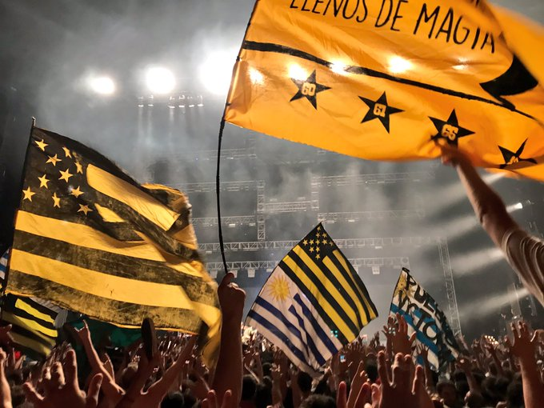
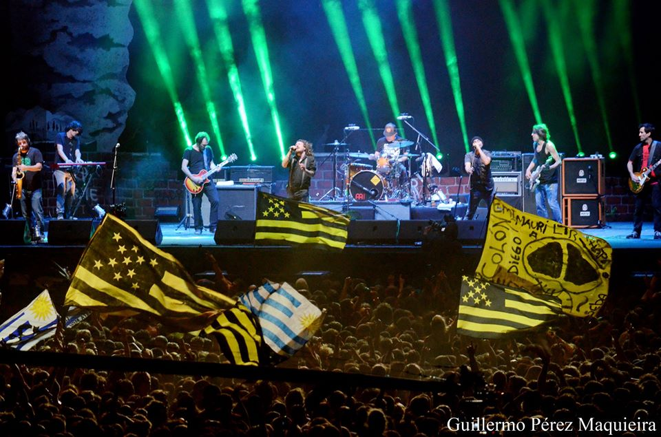
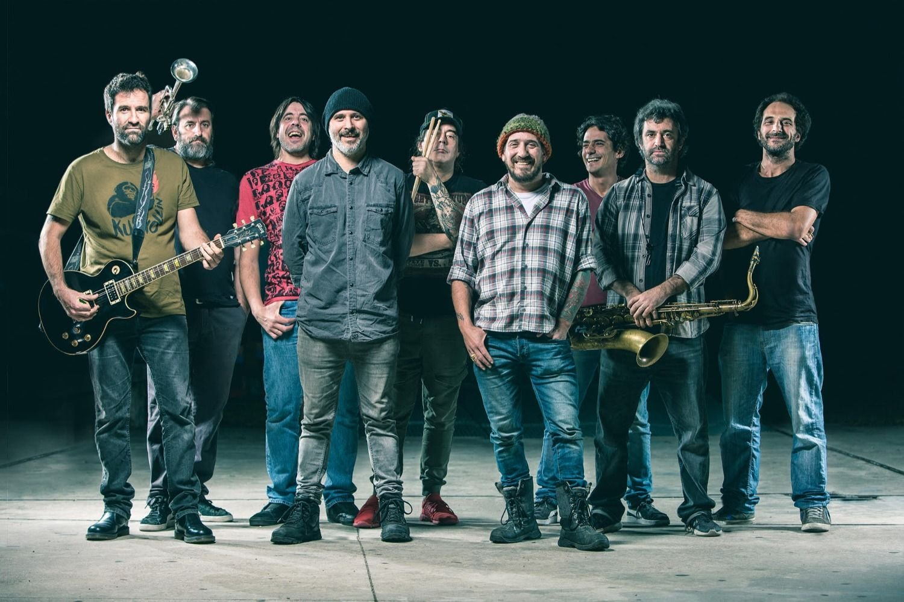
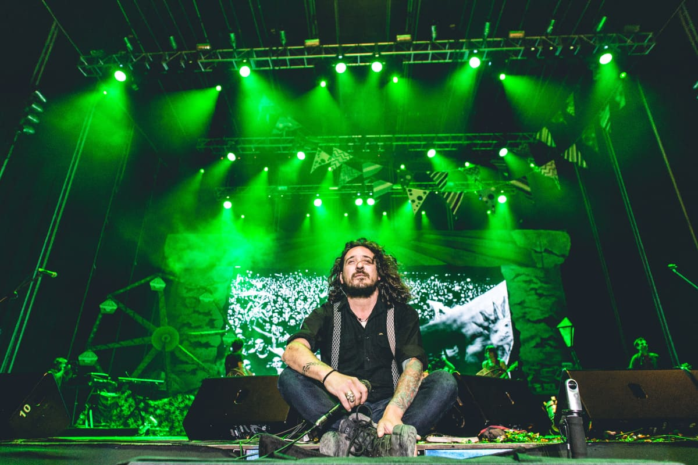
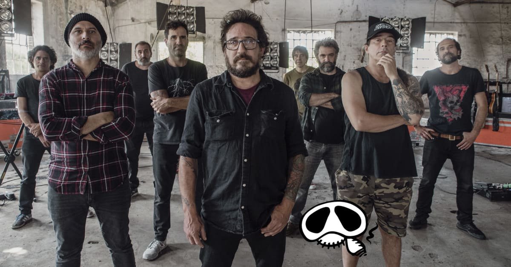
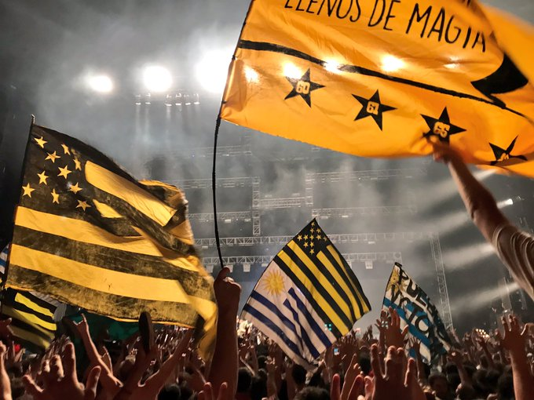
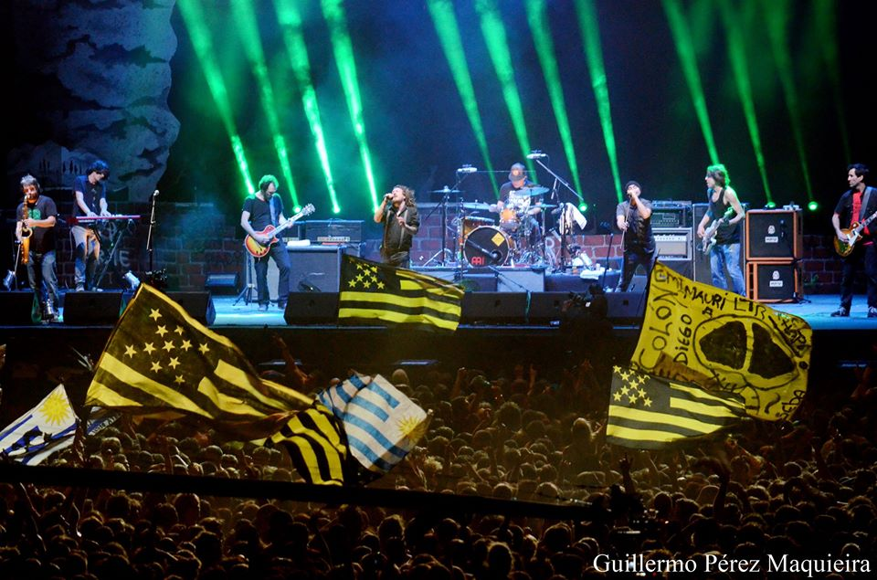
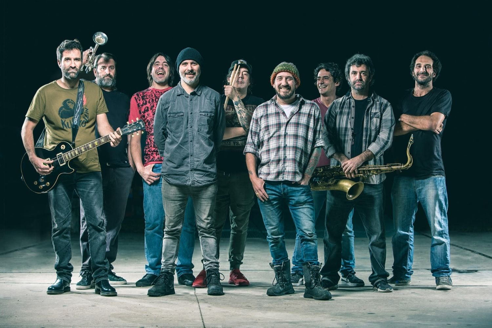
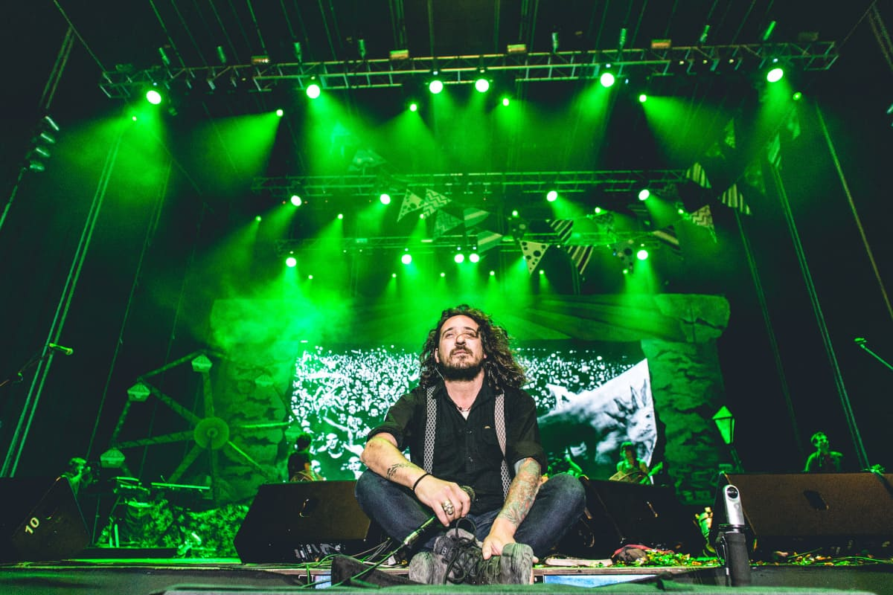
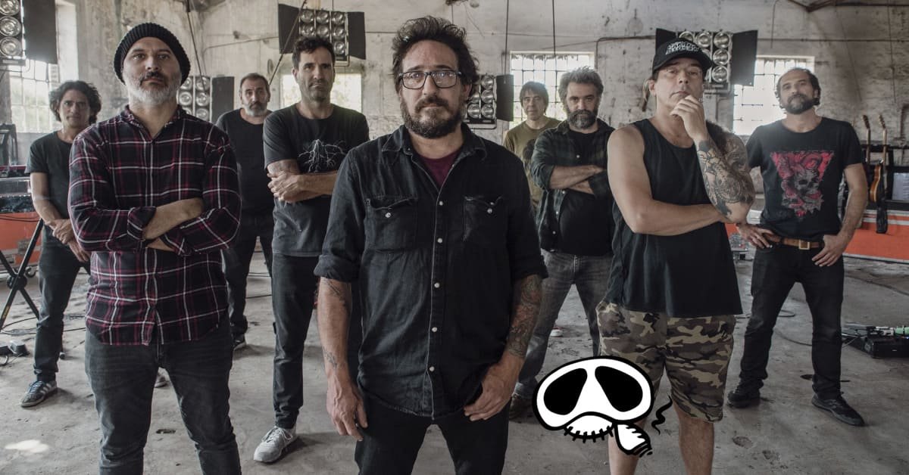

La Vela Puerca
La Vela Puerca
La Vela Puerca es una banda uruguaya de rock y fue formada en 1995, protagonista de la camada del nuevo rock uruguayo de la segunda mitad de los noventas, es actualmente una de las agrupaciones de su país con mayor convocatoria. Fue una de las pioneras en proyectarse para públicos de otros países, principalmente el argentino, aunque también de otros países, incluyendo europeos.

 








